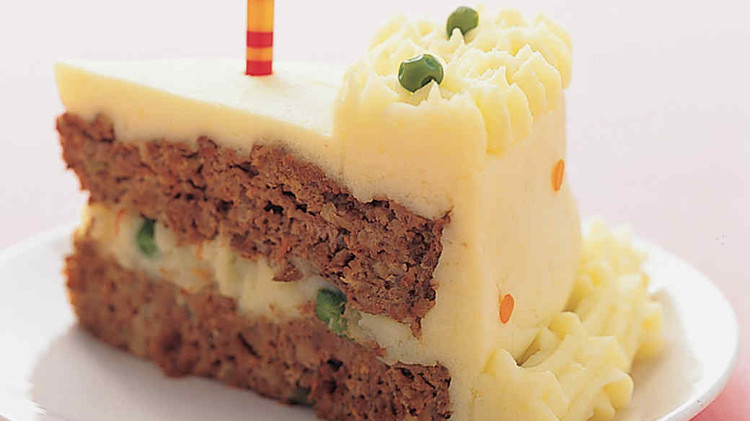

Birthday Meatloaf Cake
Birthday Meatloaf Cake

Description
Birthday cake like no other for a special person!
Ingredients
- Vegetable-oil cooking spray
- 1 tablespoon unsalted butter
- 1 medium onion, finely chopped (about 1 cup)
- 2 garlic cloves, minced
- 1 (about 1/2 cup) celery stalk, finely chopped
- 2 1/2 pounds ground beef
- 1 small carrot, peeled and finely grated (about 1/2 cup), peels reserved for decorating
- 1/4 cup tomato sauce
- 1 tablespoon Worcestershire sauce
- 1 large egg, lightly beaten
- 1/2 cup old-fashioned rolled oats
- 1 tablespoon ground mustard
- 1 1/2 teaspoons salt
- 1/4 teaspoon freshly ground pepper
- Mashed Yukon Gold Potatoes
- 1/4 cup cooked green peas
Steps
- 1/4 cup cooked green peas
- Add beef, carrot, tomato sauce, Worcestershire sauce, egg, oats, ground mustard, salt, and pepper to bowl with vegetable mixture; mix thoroughly with your hands.
- Gently press into prepared pans. Bake until instant-read thermometer registers 160 degrees. about 25 minutes. Let stand 5 minutes; carefully remove with a spatula, and transfer to wire rack set over rimmed baking sheet. Tent with foil.
- Bring 2 cups water to boil in small pan. Add reserved carrot peels; cook until tender, about 1 minute. Using a slotted spoon, transfer to paper towels to drain.
- Place 1 meatloaf on platter; spread 1 cup warm mashed potatoes over top. Sprinkle with 3 tablespoons peas. Top with remaining meatloaf. Frost top and sides with 3 cups mashed potatoes. Fill piping bag fitted with a 1/2-inch star tip (such as Ateco #825) with remaining mashed potatoes. Pipe borders around cake. Using tip of a 1/4-inch plain round tip (such as Ateco #10), punch out circles from carrot peels. Decorate cake with carrot circles and remaining peas. Serve immediately.